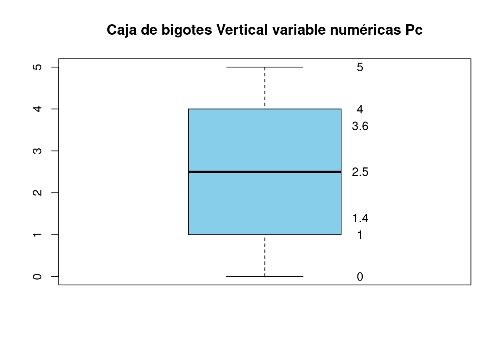

Capítulo 3 Estadística descriptiva
3.1 Qué es la Estradística descriptiva?
Es el conjunto de técnicas para organizar y describir un conjunto de datos (muestra) utilizando métodos numéricos y gráficos que resumen y presentan la información contenida en ellos.
- Ejemplo3
3.1.1 Los aspectos importantes de los datos
- Destribución de frecuencias
Cómo están repartidos o distribuidos los datos en el rango de valores de la variable evaluada?
- Ejemplo1
Se entrevistó 20 jóvenes para conocer el número de refrescos de cola que beben al día. Las respuestas obtenidas son los siguientes:
\[\begin{equation} \begin{matrix} 5 & 2 & 2 & 4 & 5\\ 1 & 1 & 4 & 2 & 1\\ 3 & 5 & 1 & 0 & 5\\ 0 & 3 & 2 & 3 & 4 \end{matrix} \end{equation}\]
3.1.2 Frecuencia relativa
Pc <- c(5,1,3,0,2,1,5,3,2,4,1,2,4,2,0,3,5,1,5,4)
Tabla1 <- as.data.frame(sort(table(TC3 =Pc),decreasing = T))
Tabla2 <- transform(Tabla1, FreAc = cumsum(Freq))
Tabla3 <- transform(Tabla2,Rel = round(prop.table(Freq),3))
knitr::kable(
Tabla3,
caption = 'Frecuencia Relativa',
booktabs = TRUE
)| TC3 | Freq | FreAc | Rel |
|---|---|---|---|
| 1 | 4 | 4 | 0.20 |
| 2 | 4 | 8 | 0.20 |
| 5 | 4 | 12 | 0.20 |
| 3 | 3 | 15 | 0.15 |
| 4 | 3 | 18 | 0.15 |
| 0 | 2 | 20 | 0.10 |
3.1.3 Frecuencia relativa y acumulada
Pc <- c(5,1,3,0,2,1,5,3,2,4,1,2,4,2,0,3,5,1,5,4)
Tabla1 <- as.data.frame(sort(table(TC3 =Pc),decreasing = T))
Tabla2 <- transform(Tabla1, FreAc = cumsum(Freq))
Tabla3 <- transform(Tabla2,Rel = round(prop.table(Freq),3))
Tabla4 <- transform(Tabla3,RelAc = round(cumsum(prop.table(Freq)),3))
knitr::kable(
Tabla4 , caption = 'Frecuencia relativa y acumulada',
booktabs = TRUE
)| TC3 | Freq | FreAc | Rel | RelAc |
|---|---|---|---|---|
| 1 | 4 | 4 | 0.20 | 0.20 |
| 2 | 4 | 8 | 0.20 | 0.40 |
| 5 | 4 | 12 | 0.20 | 0.60 |
| 3 | 3 | 15 | 0.15 | 0.75 |
| 4 | 3 | 18 | 0.15 | 0.90 |
| 0 | 2 | 20 | 0.10 | 1.00 |
Comando para obtener el Rango de una variable: Ej obtener el rango de la variable EDAD
Pc <- c(5,1,3,0,2,1,5,3,2,4,1,2,4,2,0,3,5,1,5,4)
range(Pc, na.rm=TRUE)## [1] 0 5# El parámetro na.rm=TRUE se usa para que ingore la presencia de valores perdidosComando para obtener el número de clases para la variable EDAD:
Pc <- c(5,1,3,0,2,1,5,3,2,4,1,2,4,2,0,3,5,1,5,4)
nclass.Sturges(Pc) # Número de intervalos## [1] 6Comando para obtener el límites extremo derecho; extremo derecho en cada una de las clases:
seq(0,5,length=nclass.Sturges(Pc)) # Límites de los intervalos## [1] 0 1 2 3 4 5Comando para obtener la Tabla de frecuencias absolutas para la variable EDAD
intervalosEDAD=cut(Pc,breaks=seq(0,5,length=nclass.Sturges(Pc)),include.lowest=TRUE)
intervalosEDAD # Se muestran los intervalos de edad, uno correspondiente a cada edad observada## [1] (4,5] [0,1] (2,3] [0,1] (1,2] [0,1] (4,5] (2,3] (1,2] (3,4] [0,1] (1,2]
## [13] (3,4] (1,2] [0,1] (2,3] (4,5] [0,1] (4,5] (3,4]
## Levels: [0,1] (1,2] (2,3] (3,4] (4,5]Comando para obtener la Tabla de frecuencias absolutas para la variable EDAD
table(intervalosEDAD)## intervalosEDAD
## [0,1] (1,2] (2,3] (3,4] (4,5]
## 6 4 3 3 4Pc <- c(5,1,3,0,2,1,5,3,2,4,1,2,4,2,0,3,5,1,5,4)
Tabla1 <- as.data.frame(sort(table(TC3 =Pc),decreasing = T))
Tabla2 <- transform(Tabla1, FreAc = cumsum(Freq))
knitr::kable(
Tabla2 , caption = 'Frecuencia acumulada',
booktabs = TRUE
)| TC3 | Freq | FreAc |
|---|---|---|
| 1 | 4 | 4 |
| 2 | 4 | 8 |
| 5 | 4 | 12 |
| 3 | 3 | 15 |
| 4 | 3 | 18 |
| 0 | 2 | 20 |
Comando para generar la GRAFICA DE BARRAS de frecuencias absolutas relacionada a la variable Pc
# klippy::klippy()
Pc <- c(5,1,3,0,2,1,5,3,2,4,1,2,4,2,0,3,5,1,5,4)
Tabla1 <- as.data.frame(sort(table(TC3 =Pc),decreasing = T))
knitr::kable(
Tabla1 , caption = 'Frecuencia Absoluta',
booktabs = TRUE
)| TC3 | Freq |
|---|---|
| 1 | 4 |
| 2 | 4 |
| 5 | 4 |
| 3 | 3 |
| 4 | 3 |
| 0 | 2 |
3.1.4 Gráfica de barras (Frecuencia absoluta)
tb <- table(Pc)
barras <- barplot(tb,col='skyblue', ylab ="Frecuencias Absolutas", ylim=c(0,5))
text(barras,c(1,1),tb)
grid()Comando para generar la GRAFICA DE BARRAS de frecuencias relativas relacionada a la variable Pc
tbp <- prop.table(table(Pc))
barras2 <- barplot(tbp,col='skyblue', ylab ="Frecuencias Relativas", ylim=c(0,0.25))
text(barras2,c(0.05,0.05),tbp*100)
grid()Pc <- c(5,1,3,0,2,1,5,3,2,4,1,2,4,2,0,3,5,1,5,4)
k12 <-ncol(matrix(Pc,1,20))
k11<-round(1 + (3.322*log10(k12)),digits = 0)
k11## [1] 5Px <- as.data.frame(table(x=factor(cut(Pc,breaks=k11))))
PPx <- transform(Px,
FreAc =cumsum(Freq),
Rel=round(prop.table(Freq),4),
RelAc=round(cumsum(prop.table(Freq)),4))
knitr::kable(
PPx , caption = 'Tabla en Frecuencia para Datos Agrupados',
booktabs = TRUE
)| x | Freq | FreAc | Rel | RelAc |
|---|---|---|---|---|
| (-0.005,1] | 6 | 6 | 0.30 | 0.30 |
| (1,2] | 4 | 10 | 0.20 | 0.50 |
| (2,3] | 3 | 13 | 0.15 | 0.65 |
| (3,4] | 3 | 16 | 0.15 | 0.80 |
| (4,5] | 4 | 20 | 0.20 | 1.00 |
Comando para obtener el histograma (ó GRAFICO) asociado a la tabla de frecuencias absolutas
Pc <- c(5,1,3,0,2,1,5,3,2,4,1,2,4,2,0,3,5,1,5,4)
# table(intervalosEDAD)
tbp1 <- table(Pc)
grahis <-hist(Pc, ylab ="Frecuencias Absoluta", main ="Histograma de clases asociados a una frecuencia absoluta ", col="skyblue", xlab = "Variable Pc")
# text(grahis,c(1,1),tbp1)
grid()3.2 Gráfica círcular
3.2.1 Ejemplo presentación de datos en forma de torta
Fórmula para obtener el ángulo:
\[ \alpha=\dfrac{{360}^º}{N}.f_i \]
3.2.1.1 Ejemplo1
En una clase de \(30\) estudiantes, \(12\) juegan baloncesto, \(3\) practican natación, \(9\) juegan al fútbol y el resto no practican ningún deporte.
\(\alpha_1=\dfrac{{360}^º}{30}(12)={144}^º\)
\(\alpha_2=\dfrac{{360}^º}{30}(3)={36}^º\)
\(\alpha_3=\dfrac{{360}^º}{30}(9)={108}^º\)
\(\alpha_4=\dfrac{{360}^º}{30}(6)={72}^º\)
fi <- c(12,3,9,6)
pie(fi)Gráfica con etiquetas
fi <- c(12,3,9,6)
etiquetas <- c("baloncesto","natación","fútbol","ningún deporte")
pie(fi,etiquetas)3.3 Cuantiles
Los cuantiles son conjuntos de valores (ó puntos) que dividen el conjunto de datos en grupos de igual tamaño. Por ejemplo, en la figura, hay nueve valores que dividen el conjunto de datos . Esos nueve valores son cuantiles
Figura 3.1: Ejemplo Cuantiles
3.4 Cuartiles
Los tres puntos de división (ó cuantiles) que dividen los datos en cuatro grupos de igual tamaño se denominan cuartiles. Por ejemplo, en la figura los tres puntos divisores Q1, Q2, Q3 son cuartiles.
Figura 3.2: Ejemplo Cuartiles
Comando para obtener la caja de bigotes (ó GRAFICO) asociado a la variable EDAD
3.5 Gráfica caja y bigotes
boxplot(Pc,
main="Caja de bigotes Horizontal variable numéricas Pc",
col="skyblue",horizontal=T)
values <- c(round(boxplot.stats(Pc)$conf, 1), boxplot.stats(Pc)$stats)
text(x = values, labels = values, y = 1.25)Pc <- c(5,1,3,0,2,1,5,3,2,4,1,2,4,2,0,3,5,1,5,4)
summary(Pc)## Min. 1st Qu. Median Mean 3rd Qu. Max.
## 0.00 1.00 2.50 2.65 4.00 5.00boxplot(Pc,
main="Caja de bigotes Vertical variable numéricas Pc",
col="skyblue",horizontal=F)
values <- c(round(boxplot.stats(Pc)$conf, 1), boxplot.stats(Pc)$stats)
text(y = values, labels = values, x = 1.25)
3.5.1 Críterio para determinar datos atípicos
Un dato atípico es aquella observación que está muy lejos del resto de los datos. Un valor se dice atípico si es mayor que \(Q_{3}+1.5(Q_{3}-Q_{1})\), o es menor que \(Q_{1}-1.5(Q_{3}-Q_{1})\)
\[ \text{Dato atípico}>Q_{3}+1.5(Q_{3}-Q_{1}) \] \[ \text{Dato atípico}<Q_{1}-1.5(Q_{3}-Q_{1}) \]

x <- c(8, 5, 14, -9, 19, 12, 3, 9, 7, 4,
4, 6, 8, 12, -8, 2, 0, -1, 5, 3)
boxplot(x, horizontal = TRUE)boxplot(Pc,
main="Caja de bigotes Horizontal variable numéricas Pc",
col="skyblue",
horizontal = TRUE)
stripchart(Pc, method = "jitter", pch = 19, add = TRUE, col = "blue")- Ejemplo2
Tecnología: Se pregunto a 30 jóvenes cuántas horas didicaban cada día a navegar en internet (el tiempo que dedican a sesiones de chat y a las redes sociales quedan incluido). Los resultados son los siguientes:
\[\begin{equation} \begin{matrix} 2.5 & 4.5 & 5.8 & 2.2 & 5.7\\ 5.3 & 4.0 & 0.9 & 2.5 & 2.3\\ 3.2 & 4.9 & 2.7 & 3.7 & 3.8\\ 4.9 & 2.8 & 3.6 & 4.2 & 3.1\\ 7.2 & 1.9 & 5.9 & 3.3 & 2.9\\ 1.1 & 1.7 & 2.6 & 3.1 & 4.4 \end{matrix} \end{equation}\]
3.6 Proceso para presentar datos en forma agrupada
- Obtener el tamaño de la muestra \((n)\).
- Hallar el m'inimo y el m'aximo de los datos
- Obtener el recorrido de la variable (o rango) el cual se define como:
\[ R=x_{max}-x_{min} \]
- Calcular el número de intervalos (o clases) a utilizar.
Estos intervalos tambión se llaman intervalos de clase. La regla de Sturges indica que el número de intervalos de clase recomendado, es: \[ k=1+3,322log_{10}(n) \] donde \(n\) es el tamaño de la muestra.
Obtener la amplitud de clase. La amplitud de cada celda se calcula con la fórmula.
\[ a=\dfrac{R}{k}=\dfrac{x_{max}-x_{min}}{k} \]
Los intervalos seleccionados no pueden solaparse.
Contar el número de datos que caen en cada intervalo de clase. Dicho conteo se llama la frecuencia absoluta de clase.
Calcular la frecuencia relativa de clase dividiendo la frecuencia absoluta de clase por el número total de datos en la muestra.
El diagrama ubica la variable evaluada en el eje \(x\), y sobre este eje, levanta rectángulos cuyas áreas son iguales o proporcionales a la frecuencia absoluta \((n_i)\) o relativa \((f_i)\) de cada intervalo de clase.
- Ejemplo3
edad <- c(22, 34, 29, 25, 30, 33, 31, 27, 25, 25)
tiempo <- c(14.21, 10.36, 11.89, 13.81, 12.03, 10.99, 12.48, 13.37, 12.29, 11.92)
sexo <- c("M","H","H","M","M","H","M","M","H","H")
misdeClase <- data.frame(edad,tiempo,sexo)
boxplot(misdeClase$edad~misdeClase$sexo,horizontal = T)
Pc <- misdeClase$edad
values <- c(round(boxplot.stats(Pc)$conf, 1), boxplot.stats(Pc)$stats)
text(x = values, labels = values, y = 1.5)
edad <- c(22, 34, 29, 25, 30, 33, 31, 27, 25, 25)
tiempo <- c(14.21, 10.36, 11.89, 13.81, 12.03, 10.99, 12.48, 13.37, 12.29, 11.92)
sexo <- c("M","H","H","M","M","H","M","M","H","H")
misdeClase <- data.frame(edad,tiempo,sexo)
boxplot(misdeClase$tiempo~misdeClase$sexo,horizontal = T)
P1c <- misdeClase$tiempo
values <- c(round(boxplot.stats(P1c)$conf, 1), boxplot.stats(P1c)$stats)
text(x = values, labels = values, y = 1.5)edad <- c(22, 34, 29, 25, 30, 33, 31, 27, 25, 25)
tiempo <- c(14.21, 10.36, 11.89, 13.81, 12.03, 10.99, 12.48, 13.37, 12.29, 11.92)
sexo <- c("M","H","H","M","M","H","M","M","H","H")
misdeClase <- data.frame(edad,tiempo,sexo)
boxplot(misdeClase$tiempo~misdeClase$sexo,horizontal = F)
P1c <- misdeClase$tiempo
values <- c(round(boxplot.stats(P1c)$conf, 1), boxplot.stats(P1c)$stats)
text(y = values, labels = values, x = 1.5)
3.7 Datos no agrupados
Las siguientes son recomendaciones en el tratamiento de datos no agrupados.
- Ordenar los datos de menor a mayor.
- Colocar una etiqueta numérica para tener clara la posición que tiene el datos en el ordenamiento.
3.7.1 Medidas de posición
Todas ellas a su manera tratan de dar una idea del número alrededor del cual se centra a todo el conjunto de datos.
3.7.2 La media aritmética para datos no agrupados \((\bar{x})\)
\[ \bar{x}=\dfrac{\sum^{n}_{i=1}x_{i}}{n} \]
3.7.3 La mediana para datos no agrupados
El número \(n\) es impar
\[Me=X_{\frac{n+1}{2}}\] El número \(n\) es par
\[Me=\dfrac{X_{\frac{n}{2}}+X_{\frac{n+2}{2}}}{2}\]
3.7.4 La Moda \((M_{0})\)
Es la medida de posición que indica la magnitud del valor que se presenta con más frecuencia en una serie de datos.
3.7.5 Cálculo de cuartiles en datos NO agrupados
Sea el conjunto de datos no agrupados:
\[ 20,23,24,24,24,25,29,31,31,33,34,36,36,37,39,39,40,40,41,45 \] * Proceso \(Q_{1}:\) El primer cuartil es el valor mayor que el \(25 \%\) de los valores de la distribuci'on. como N=20 resulta que
\[ \dfrac{n}{4}=5 \] el primer cuartil es la media aritm'etica de dicho valor y el siguiente:
\[ Q_{1}=\dfrac{24+25}{2}=24.5 \] Sea el conjunto de datos no agrupados:
\[ 20,23,24,24,24,25,29,31,31,33,34,36,36,37,39,39,40,40,41,45 \]
- Proceso \(Q_{2}:\)
El segundo cuartil es, evidentemente, la medianan de la distribución, es el valor de la variable que ocupa el lugar central en un conjunto de datos ordenados. Ccomo N=20 resulta que
\[ \dfrac{n}{2}=10 \]
la mediana es la media aritm'etica de dicho valor y el siguiente:
\[ M_{e}=Q_{2}=\dfrac{33+34}{2}=33.5 \] Sea el conjunto de datos no agrupados:
\[ 20,23,24,24,24,25,29,31,31,33,34,36,36,37,39,39,40,40,41,45 \]
- Proceso \(Q_{3}:\)
El tercer cuartil es, el valor que sobrepasa al \(75 \%\) de los valores de la distribución. En nuestro caso, como \(N=20\) resulta que
\[ \dfrac{3n}{4}=15 \]
resulta:
\[ Q_{3}=\dfrac{39+39}{2}=39 \]
3.8 Datos agrupados
Figura 3.3: Medidas de tendencia central, imagen tomada de (Gutierrez Banegas, Leon, et al. 2012) pág \(46\)
3.8.1 Ejemplo1 Datos agrupados
Dada la siguiente distribución correspondiente al salario samanal en dòlares para un grupo de obreros en una empresa petrolera tradicional

Obtener:
La media \((\bar{x}=?)\)
La mediana \((Me=?)\)
La moda \((Mo=?)\)
El primer cuartil \((Q_1=?)\)
El segundo cuartil \((Q_2=?)\)
El tercer cuartil \((Q_3=?)\)
La varianza \((\sigma^2=?)\)
La desviación estándar \((\sqrt{\sigma^2}=\sigma=?)\)
CODIGO PARA HALLAR LA MEDIA
a <- c(200,300,400,500,600,700)
b <- c(300,400,500,600,700,800)
fi <- c(85,90,120,70,62,36)
Fi <- cumsum(fi)
Sumavfi <- function(x){
y <- sum(x)
return(y)
}
# Sumavfi(vfi)
MarcaC <- function(a,b){
yr <- (a+b)/2
return(yr)
}
#MarcaC(300,400)
TDAG <- data.frame(a,b,fi,Fi)
TDAG## a b fi Fi
## 1 200 300 85 85
## 2 300 400 90 175
## 3 400 500 120 295
## 4 500 600 70 365
## 5 600 700 62 427
## 6 700 800 36 463TDAG$a## [1] 200 300 400 500 600 700TDAG$b## [1] 300 400 500 600 700 800MarcaC(TDAG$a,TDAG$b)## [1] 250 350 450 550 650 750TDAG2 <- transform(TDAG,xi =MarcaC(a,b))
TDAG2## a b fi Fi xi
## 1 200 300 85 85 250
## 2 300 400 90 175 350
## 3 400 500 120 295 450
## 4 500 600 70 365 550
## 5 600 700 62 427 650
## 6 700 800 36 463 750Media_DatosAgrupados <- function(x,y){
n <- sum(x)
p <- sum(x*y)
yr <- p/n
return(yr)
}
Media_DatosAgrupados(x=TDAG2$fi,y=TDAG2$xi)## [1] 459.0713round(Media_DatosAgrupados(x=TDAG2$fi,y=TDAG2$xi),2)## [1] 459.073.8.2 Ejemplo2 Datos agrupados
En la distribución de frecuencias correspondiente al peso en \(Kg\) para un grupo de obreros.

Calcule:
La media \((\bar{x}=?)\)
La mediana \((Me=?)\)
La moda \((Mo=?)\)
El primer cuartil \((Q_1=?)\)
El segundo cuartil \((Q_2=?)\)
El tercer cuartil \((Q_3=?)\)
La varianza \((\sigma^2=?)\)
La desviación estándar \((\sqrt{\sigma^2}=\sigma=?)\)
Proceso Mediana
a <- c(30,40,50,60,70,80,90)
b <- c(40,50,60,70,80,90,100)
fi <- c(2,2,7,11,12,16,2)
tabla <- data.frame(a=a, b=b, fi=fi, Fi=cumsum(fi))
tabla## a b fi Fi
## 1 30 40 2 2
## 2 40 50 2 4
## 3 50 60 7 11
## 4 60 70 11 22
## 5 70 80 12 34
## 6 80 90 16 50
## 7 90 100 2 52n <- sum(fi)
Nmedios <- n/2 # posición de la clase para la Mediana
Li <- 70
f_act <- 12
F_ant <- 22
Ic <- 10
Mediana <- function(n,Nmedios,Li,f_act,F_ant,Ic){
num <- Nmedios-F_ant
den <- f_act
yr <- Li+(num/den)*Ic
return(yr)
}
Mediana(n,Nmedios,Li,f_act,F_ant,Ic)## [1] 73.33333round(Mediana(n,Nmedios,Li,f_act,F_ant,Ic),2)## [1] 73.33a <- c(55,60,65,70,75,80,85)
b <- c(60,65,70,75,80,85,90)
fi <- c(6,20,18,50,17,16,5)
tabla <- data.frame(a=a, b=b, fi=fi, Fi=cumsum(fi))
tabla ## a b fi Fi
## 1 55 60 6 6
## 2 60 65 20 26
## 3 65 70 18 44
## 4 70 75 50 94
## 5 75 80 17 111
## 6 80 85 16 127
## 7 85 90 5 132n <- sum(fi)
Nmedios <- n/2 #posicion de la clase para la
Nmedios ## [1] 66Li <-70
f_act <- 50 # es el fi de la clase donde esta la mediana, osea la actual
F_ant <- 44 #es el Fi aanterior (22)
Ic =5 #es la amplitud de la clase
Mediana <- function(n,Nmedios,Li,f_act,F_ant,Ic){
num <- Nmedios-F_ant
den <- f_act
yr <-Li + (num/den) * Ic
return(yr)
}
Mediana(n,Nmedios,Li,f_act,F_ant,Ic) ## [1] 72.2round(Mediana(n,Nmedios,Li,f_act,F_ant,Ic),2) ## [1] 72.2Proceso Moda
a <- c(30,40,50,60,70,80,90)
b <- c(40,50,60,70,80,90,100)
fi <- c(2,2,7,11,12,16,2)
tabla <- data.frame(a=a, b=b, fi=fi, Fi=cumsum(fi))
tabla## a b fi Fi
## 1 30 40 2 2
## 2 40 50 2 4
## 3 50 60 7 11
## 4 60 70 11 22
## 5 70 80 12 34
## 6 80 90 16 50
## 7 90 100 2 52n <- sum(fi)
Li <- 80
Ic <- 10
delta1 <- 4
delta2 <- 14
Moda <- function(Li,delta1,delta2,Ic){
num <- delta1
den <- delta1+delta2
yr <- Li+(num/den)*Ic
return(yr)
}
Moda(Li,delta1,delta2,Ic)## [1] 82.22222round(Moda(Li,delta1,delta2,Ic),2)## [1] 82.223.8.3 Ejemplo3 Datos agrupados
Para la tabla de distribución en frecuencias correspondiente a las horas extras laboradas por un grupo de obreros
Realice el cálculo de:
La media \((\bar{x}=?)\)
La mediana \((Me=?)\)
La moda \((Mo=?)\)
El primer cuartil \((Q_1=?)\)
El segundo cuartil \((Q_2=?)\)
El tercer cuartil \((Q_3=?)\)
La varianza \((\sigma^2=?)\)
La desviación estándar \((\sqrt{\sigma^2}=\sigma=?)\)
Proceso para la varianza
a <- c(55,60,65,70,75,80,85)
b <- c(60,65,70,75,80,85,90)
fi <- c(6,20,18,50,17,16,5)
Fi <- cumsum(fi)
TDAG <- data.frame(a,b,fi,Fi)
MarcaC <- function(a,b){
yr <- (a+b)/2
return(yr)
}
TDAG2 <- transform(TDAG,xi =MarcaC(a,b))
TDAG2## a b fi Fi xi
## 1 55 60 6 6 57.5
## 2 60 65 20 26 62.5
## 3 65 70 18 44 67.5
## 4 70 75 50 94 72.5
## 5 75 80 17 111 77.5
## 6 80 85 16 127 82.5
## 7 85 90 5 132 87.5Xm <- function(x,y){
n <- sum(x)
p <- sum(x*y)
yr <- p/n
return(yr)
}
n <- sum(fi)
Varianza <- function(n,fi,M,Media){
p1 <- (M-Media)^2
p2 <- fi*p1
suma <- sum(p2)
yr <- suma/(n-1)
return(yr)
}
Xm(x=TDAG2$fi,y=TDAG2$xi)## [1] 72.04545Varianza(n,fi,M=TDAG2$xi,Media=Xm(x=TDAG2$fi,y=TDAG2$xi))## [1] 52.84525desvs <- (Varianza(n,fi,M=TDAG2$xi,Media=Xm(x=TDAG2$fi,y=TDAG2$xi)))^(1/2)
desvs## [1] 7.269474# Desviación media (Dispersión)
DM <- function(n,M,Media){
d <- abs(M-Media)
suma <- sum(d)
yr <- suma/n
return(yr)
}
DM(n,M=TDAG2$xi,Media=Xm(x=TDAG2$fi,y=TDAG2$xi))## [1] 0.457989Proceso para el \(Q_3\)
a <- c(55,60,65,70,75,80,85)
b <- c(60,65,70,75,80,85,90)
fi <- c(6,20,18,50,17,16,5)
tabla <- data.frame(a=a, b=b, fi=fi, Fi=cumsum(fi))
tabla ## a b fi Fi
## 1 55 60 6 6
## 2 60 65 20 26
## 3 65 70 18 44
## 4 70 75 50 94
## 5 75 80 17 111
## 6 80 85 16 127
## 7 85 90 5 132n <- sum(fi)
c <- 3
P <- (c*n)/4
P## [1] 99Li <- 75
fq <- 17
Fant <- 94
Ic <- 5
Q3 <- function(P,Li,fq,Fant,Ic){
NUM <- P-Fant
DEN <- fq
yr <- Li + (NUM/DEN)*Ic
return(yr)
}
Q3(P,Li,fq,Fant,Ic) ## [1] 76.470593.8.4 Dispersión
![Dispersión, imagen tomada de [@gutierrez2012probabilidad] pág $51$](images/Sesgo1.jpg)
Figura 3.4: Dispersión, imagen tomada de (Gutierrez Banegas, Leon, et al. 2012) pág \(51\)
3.8.5 Aplicación Shiny para Dispersión
Esta aplicación genera de manera aleatoria datos y compara la función de densidad con la gráfica de caja y bigotes.
Densidad - Caja y bigotes para obtener la conclusión de asimetría
Simétrica, si la mayor concentración de datos se localiza en el centro de la distribución
Sesgada a derecha, si la mayor concentración de datos se localiza a la izquierda de la distribución
Sesgada a izquierda, si la mayor concentración de datos se localiza a la derecha de la distribución
3.8.7 La mediana para datos agrupados \((Me)\)
Proceso:
Se elabora la tabla de frecuencias de datos con diferentes intervalos de clases, se ubican las frecuencias absolutas \(n_{i}\) y se calculan las frecuencias acumuladas \(F_{i}\) de la distribución.
Se determina la ubicación o posición de la mediana en el intervalo de la distribución de frecuencia, mediante la fórmula \(\frac{n}{2}\). Esta clase se llamará clase de la mediana. El resultado obtenido determinarí la clase donde se encuentra ubicada \(f_{i}\) sea igual o superior a este resultado. Luego se aplica la fórmula:
\[Me=L_{i}+\left( \dfrac{\frac{n}{2}-F_{i-1}}{f_{i}}\right) I_c\]
- \(\frac{n}{2}\): Posición de la mediana.()
Este valor de posición se comparó con las datos que se tienen en la columna (\(F_i\)), y posteriormente se selecciona el valor más proximo pero mayor que \(\frac{n}{2}\). El intervalo donde se encontro dicho valor se denomina “Intervalo de la mediana”
\(L_{i}\): Es el limite inferior de la clase donde se ubicada la mediana.
\(F_{(i-1)}\): Es el valor de la frecuencia acumulada anterior a la clase mediana.
\(f_{i}\): Es el valor de la frecuencia de clase donde se encuentra la mediana.
\(I_{c}\): Es el tamaño del intervalo de clase.
\(n\): Es el número total de datos de la distribuación en estudio.
3.8.8 Los cuartiles para datos agrupados \((Q_c)\)
\[Q_c=L_{i}+\left( \dfrac{\frac{cn}{4}-F_{(i-1)}}{f_{i}}\right) I_c\]
Se inicia determinando la posición que ocupa el cuartil solicitado mediante la fórmula
Posición de clase para el cuartil \(c\);
\[ P_{c}=\dfrac{cn}{4} \] \(\frac{cn}{4}\): Posición que ocupa el cuartil en la distribución de frecuencia.
Este valor de posición se comparó con las datos que se tienen en la columna (\(F_i\)), y posteriormente se selecciona el valor más proximo pero mayor que \(\frac{n}{2}\). El intervalo donde se encontro dicho valor se denomina “Intervalo intercuartílico \(Q_c\)”
\(c\): Corresponde al número del cuartil solicitado: \(1,2,3\).
\(L_{i}\): Es el limite inferior de la clase donde se encuentra ubicado el cuartil deseado.
3.8.9 La moda para datos agrupados \((Mo)\)
\[ M_{o}=L_{i}+\left( \dfrac{\vartriangle_{1}}{\vartriangle_{1}+\vartriangle_{2}}\right) I_c \]
\(L_{i}\): Es el limite inferior de la clase modal.
\(\vartriangle_{1}\):Es la diferencia entre la frecuencia absoluta de la clase modal y la frecuencia de la clase anterior a la modal.
\(\vartriangle_{2}\):Es la diferencia entre la frecuencia absoluta de la clase modal y la frecuencia de la clase siguiente a la modal.
\(I_{c}\): Es el tamaño del intervalo de clase.
3.9 Medidas de dispersión
La medida de dispersión es un número que nos indica el grado de separación en un conjunto de datos. Si el valor de la dispersión es pequeño (respecto de la unidad de medida) entonces hay una gran uniformidad entre los datos (homogénea)
Por el contrario, un gran valor en la dispersión nos indica poca uniformidad (heterogénea). Cuando es cero quiere decir que todos los datos son iguales. Las medidas de dispersión se clasifican en dos grupos
- Dispersión absoluta
Entre ellas el rango, el rango intercuartilico, la desviación media, la varianza y la desviación típica.
\[ \text{Para datos no agrupados}: \ \text{DM}=\dfrac{\sum\left| x_{i}-\bar{x} \right| }{n}=\dfrac{\sum\left| d_{i} \right|}{n} \] \[ \text{Para datos agrupados}: \ \text{DM}=\dfrac{\sum\left| x_{PM}-\bar{x} \right|f_{i} }{n}=\dfrac{\sum x_{i}\left| d_{i} \right|}{n} \]
- Dispersión relativa
La que tiene mayor importancia es el coeficiente de variación.
El valor numérico de la varianza es mayor cuando más dispersión tienen los valores de la variable en estudio, y por tanto, cuanto menos representativa es la media.
El coeficiente de variación (ó coeficiente de Pearson) \(CV\), se define por el cociente entre la desviación típica (ó estándar) y la media aritmética de la variable e indica, por tanto, el número de veces que la desviación típica contiene a la media.
\[ CV=\dfrac{S}{\bar{x}}\times 100 \% \] El inconveniente de esta medida es que si es igual a cero el denominador de la fracción; es decir, la media de la variable, carece de significado.
El valor mínimo del coeficiente de variación es cero, que es el valor que toma cuando es igual a cero el numerador de la fracción; es decir, la variación típica. En tal caso, todos los valores de la variable son iguales a la media, de manera que la dispersión de los valores en torno a la media es nula y la media es la representación perfecta de la serie de datos.
La media es tanto más representativa cuando más próximo a cero está el coeficiente de variación , y cuanto más elevado es el coeficiente de variación, menos representativa es la media.
NOTA:
La varianza es más significativa cuando se comparan dos o más conjuntos de observaciones.
3.10 Coeficiente para variación de Karl Pearson
Este es un criterio numérico para determinar la simetría (ó sesgo) en un histograma o en una gráfica poligonal continua
\[ A_{p}=\dfrac{\bar{x}-M_{0}}{S} \]
Asimétria por la derecha (ó distribuación es asimétrica positiva) \((M_{0}<\bar{x})\), y \(A_{p}>0\)
Asimétria por la izquierda (ó distribución es asimétrica negativa) \((\bar{x}<M_{0})\) y \(A_{p}<0\)
Asimétria \(A_{p}=0\)
Para cuando la moda no se encuentra bien definida se puede sustituir por la mediana
\[ A_{p}=\dfrac{\bar{x}-M_{e}}{S} \]
3.11 Medida cuartil de asimetría
En una distribución simétrica los cuartiles quedan simétricamente colocados respecto a la mediana, pero si es asimétrica un cuartil se separa más de otro. La medida cuartil de asimetría esta dada por
\[ S_{k}=\dfrac{(Q_3-M_{e})-(M_{e}-Q_{1})}{Q_{3}-Q_{1}}=\dfrac{Q_{3}+Q_{1}-2M_{e}}{RI} \]
Si la asimetría es a la derecha \(Q_{3}\) está más lejos de la mediana que \(Q_{1}\).
Si la asimétria es a la izquierda \(Q_{1}\) está más alejada de la mediana que \(Q_{3}\).
3.12 Coeficiente de asimetría de Fisher
Permite interpretar la forma de la distribución, respecto a ser o no simétrica.
\[ A_{s}=\dfrac{\dfrac{\sum{f_{i}(x_{i}-{\bar{x}})^3}}{n}}{\sigma^3} \]
Si \(A_{s}<0\) es asimétrica a izquierda.
Si \(A_{s}=0\) es simétrica.
Si \(A_{s}>0\) es asimétrica a derecha
3.13 Ejercicios propuestos primer parcial
- Se midió el contenido de nicotina en una muestra aleatoria de 40 cigarrillos
Datos <- matrix(c(1.09,1.92,2.31,1.79,2.28,1.74,1.47,1.97,
0.85,1.24,1.58,2.03,1.70,2.17,2.55,2.11,
1.86,1.90,1.68,1.51,1.64,0.72,1.69,1.85,
1.82,1.79,2.46,1.88,2.08,1.67,1.37,1.93,
1.40,1.64,2.09,1.75,1.63,2.37,1.75,1.69),5,byrow =TRUE)
Datos## [,1] [,2] [,3] [,4] [,5] [,6] [,7] [,8]
## [1,] 1.09 1.92 2.31 1.79 2.28 1.74 1.47 1.97
## [2,] 0.85 1.24 1.58 2.03 1.70 2.17 2.55 2.11
## [3,] 1.86 1.90 1.68 1.51 1.64 0.72 1.69 1.85
## [4,] 1.82 1.79 2.46 1.88 2.08 1.67 1.37 1.93
## [5,] 1.40 1.64 2.09 1.75 1.63 2.37 1.75 1.69- Se realiza un estudio acerca de los efectos del tabaquismo sobre los patrones de sueño. La medición que se observa es el tiempo, en minutos, que toma quedar dormido. Se obtienen los siguientes datos:
DFumadores <- matrix(c(69.3,56.0,22.1,47.6,
53.2,48.1,52.7,34.4,
60.2,43.8,23.2,13.8),3,byrow = TRUE)
DFumadores## [,1] [,2] [,3] [,4]
## [1,] 69.3 56.0 22.1 47.6
## [2,] 53.2 48.1 52.7 34.4
## [3,] 60.2 43.8 23.2 13.8DNoFumadores <- matrix(c(28.6,25.1,26.4,34.9,
29.8,28.4,38.5,30.2,
30.6,31.8,41.6,21.1,
36.0,37.9,13.9,21.7),4,byrow=TRUE)
DNoFumadores## [,1] [,2] [,3] [,4]
## [1,] 28.6 25.1 26.4 34.9
## [2,] 29.8 28.4 38.5 30.2
## [3,] 30.6 31.8 41.6 21.1
## [4,] 36.0 37.9 13.9 21.7- Los siguientes datos representan la duración de la vida, en segundos, de 50 moscas de la fruta que se someten a un nuevo aerosol en un experimento de laboratorio controlado.
Dtiempo <- matrix(c(17,20,10,9,23,12,19,18,24,
12,14,6,9,13,6,7,10,13,7,
16,18,8,3,3,32,9,7,10,11,
13,7,18,7,10,4,27,19,16,8,
7,10,5,14,15,10,9,6,7,15),5,byrow = TRUE)## Warning in matrix(c(17, 20, 10, 9, 23, 12, 19, 18, 24, 12, 14, 6, 9, 13, : la
## longitud de los datos [49] no es un submúltiplo o múltiplo del número de filas
## [5] en la matrizDtiempo## [,1] [,2] [,3] [,4] [,5] [,6] [,7] [,8] [,9] [,10]
## [1,] 17 20 10 9 23 12 19 18 24 12
## [2,] 14 6 9 13 6 7 10 13 7 16
## [3,] 18 8 3 3 32 9 7 10 11 13
## [4,] 7 18 7 10 4 27 19 16 8 7
## [5,] 10 5 14 15 10 9 6 7 15 17- Las siguientes puntuaciones representan la calificación en el examen final para un curso de estadística elemental:
DCalificacion <- matrix(c(23,60,79,32,57,74,52,70,82,
36,80,77,81,95,41,65,92,85,
55,76,52,10,64,75,78,25,80,
98,81,67,41,71,83,54,64,72,
88,62,74,43,60,78,89,76,84,
48,84,90,15,79,34,67,17,82,
69,74,63,80,85,61,91,78,77),7,byrow=TRUE)
DCalificacion## [,1] [,2] [,3] [,4] [,5] [,6] [,7] [,8] [,9]
## [1,] 23 60 79 32 57 74 52 70 82
## [2,] 36 80 77 81 95 41 65 92 85
## [3,] 55 76 52 10 64 75 78 25 80
## [4,] 98 81 67 41 71 83 54 64 72
## [5,] 88 62 74 43 60 78 89 76 84
## [6,] 48 84 90 15 79 34 67 17 82
## [7,] 69 74 63 80 85 61 91 78 77- La duración de fallas eléctricas, en minutos, se presenta en los siguiente datos.
Dtiempo <- matrix(c(22,18,135,15,90,78,69,98,102,
83,55,28,121,120,13,22,124,112,
70,66,74,89,103,24,21,112,21,
40,98,87,132,115,21,28,43,37,
50,96,118,158,74,78,83,93,95),5,byrow = TRUE)
Dtiempo## [,1] [,2] [,3] [,4] [,5] [,6] [,7] [,8] [,9]
## [1,] 22 18 135 15 90 78 69 98 102
## [2,] 83 55 28 121 120 13 22 124 112
## [3,] 70 66 74 89 103 24 21 112 21
## [4,] 40 98 87 132 115 21 28 43 37
## [5,] 50 96 118 158 74 78 83 93 95- En 20 automóviles elegidos aleatoriamente, se tomaron las emisiones de hidrocarburos en velocidad al vacío, en partes por millón (ppm), para modelos de 1980 y 1990.
Dmodelo1980 <- matrix(c(141,359,247,940,
882,494,306,210,
105,880,200,223,
188,940,241,190,
300,435,241,380),5,byrow = TRUE)
Dmodelo1980## [,1] [,2] [,3] [,4]
## [1,] 141 359 247 940
## [2,] 882 494 306 210
## [3,] 105 880 200 223
## [4,] 188 940 241 190
## [5,] 300 435 241 380Dmodelo1990 <- matrix(c(140,160,20,20,
223,60,20,95,
360,70,220,400,
217,58,380,200,
175,85,65,235),5,byrow = TRUE)
Dmodelo1990## [,1] [,2] [,3] [,4]
## [1,] 140 160 20 20
## [2,] 223 60 20 95
## [3,] 360 70 220 400
## [4,] 217 58 380 200
## [5,] 175 85 65 235- Los siguientes datos representan el tiempo que ha estado ingresado cada paciente (en días) para recuperarse de una determinada enfermedad.
Dtiempo <- matrix(c(8, 20, 27, 30, 32,
35, 36, 40, 40, 40,
40, 41, 42, 45, 47,
50, 52, 61, 89, 108),4,byrow = TRUE)
Dtiempo## [,1] [,2] [,3] [,4] [,5]
## [1,] 8 20 27 30 32
## [2,] 35 36 40 40 40
## [3,] 40 41 42 45 47
## [4,] 50 52 61 89 108- Uno de los ejercicos de investigación a realizar en el curso de Bio-estadística consiste en reunir frecuencia del pulso de todos los estudiantes del grupo.
Pulsos en reposo: 68, 76, 84, 80, 76, 72, 60, 68, 68, 80, 68, 80, 64, 64, 72, 76, 72, 68, 56, 88, 80, 76, 68, 56, 64, 60, 92, 72, 84, 72
Pulsos después de hacer ejercicio: 148, 136, 157, 151, 121, 139, 137, 129, 127, 129, 155, 141, 133, 153, 161, 153, 127, 135, 144, 146, 136, 131, 133, 159, 127, 142, 133, 150, 164, 161
- Al comenzar el curso de Bio-estadística se pasó una encuesta a los alumnos, preguntándoles, entre otras cuestiones, por el número de hermanos que tenı́an. Se obtuvieron los siguientes resultados:
Dhermanos <- matrix(c(3, 3, 2, 2, 8, 5,
2, 4, 3, 1, 4, 5,
3, 3, 3, 3, 3, 2,
5,1, 3, 3, 2, 2,
4, 3, 3, 2, 2, 4,
4, 3, 6, 3, 3, 2,
2, 4, 3, 4, 3, 2,
2, 4, 4, 3, 3, 4,
2, 5, 4, 1, 2, 8,
2 ,3, 3, 4, 5, 4),5,byrow = TRUE)
Dhermanos## [,1] [,2] [,3] [,4] [,5] [,6] [,7] [,8] [,9] [,10] [,11] [,12]
## [1,] 3 3 2 2 8 5 2 4 3 1 4 5
## [2,] 3 3 3 3 3 2 5 1 3 3 2 2
## [3,] 4 3 3 2 2 4 4 3 6 3 3 2
## [4,] 2 4 3 4 3 2 2 4 4 3 3 4
## [5,] 2 5 4 1 2 8 2 3 3 4 5 4- Un nuevo hotel va abrir sus puertas en una cierta ciudad. Antes de decidir el precio de sus habitaciones, el gerente investiga los precios por habitación de 40 hoteles de la misma categoría de esta ciudad. Los datos obtenidos (en miles de pesetas) fueron:
Dprecio <- matrix(c(3.3,4.2,4.5,5.1,3.3,4.3,4.7,5.3,3.7,4.3,
4.7,5.3,3.8,4.3,4.7,5.4,3.9,4.3,4.7,5.6,
3.9,4.4,4.8,5.8,3.9,4.4,4.9,5.8,4.0,4.5,
5.0,6.0,4.1,4.5,5.0,6.1,4.2,4.5,5.1,6.1),4,byrow=TRUE)
Dprecio## [,1] [,2] [,3] [,4] [,5] [,6] [,7] [,8] [,9] [,10]
## [1,] 3.3 4.2 4.5 5.1 3.3 4.3 4.7 5.3 3.7 4.3
## [2,] 4.7 5.3 3.8 4.3 4.7 5.4 3.9 4.3 4.7 5.6
## [3,] 3.9 4.4 4.8 5.8 3.9 4.4 4.9 5.8 4.0 4.5
## [4,] 5.0 6.0 4.1 4.5 5.0 6.1 4.2 4.5 5.1 6.1- Se entrevistó 20 jóvenes para conocer el número de refrescos de cola que beben al día. Las respuestas obtenidas son los siguientes:
Dcolas <- matrix(c(5,1,3,0,2,1,5,3,2,4,1,2,4,2,0,3,5,1,5,4),4,byrow = TRUE)
Dcolas## [,1] [,2] [,3] [,4] [,5]
## [1,] 5 1 3 0 2
## [2,] 1 5 3 2 4
## [3,] 1 2 4 2 0
## [4,] 3 5 1 5 4- Se pregunto a 30 jóvenes cuántas horas didicaban cada día a navegar en internet (el tiempo que dedican a sesiones de chat y a las redes sociales quedan incluido). Los resultados son los siguientes:
Dhoras <- matrix(c(2.5 , 4.5 , 5.8 , 2.2 , 5.7,
5.3 , 4.0 , 0.9 , 2.5 , 2.3,
3.2 , 4.9 , 2.7 , 3.7 , 3.8,
4.9 , 2.8 , 3.6 , 4.2 , 3.1,
7.2 , 1.9 , 5.9 , 3.3 , 2.9,
1.1 , 1.7 , 2.6 , 3.1 , 4.4),6,byrow=TRUE)
Dhoras## [,1] [,2] [,3] [,4] [,5]
## [1,] 2.5 4.5 5.8 2.2 5.7
## [2,] 5.3 4.0 0.9 2.5 2.3
## [3,] 3.2 4.9 2.7 3.7 3.8
## [4,] 4.9 2.8 3.6 4.2 3.1
## [5,] 7.2 1.9 5.9 3.3 2.9
## [6,] 1.1 1.7 2.6 3.1 4.4- La información fue recolectada en 57 meses consecutivos en los cuales se mantuvo el mismo número de trabajadores. Número de retardos al trabajo en n = 57 meses.
retardos<-c(68,63,42,27,30,36,28,32,79,27,22,23,24,25,44,65,43,25,74,
51,36,42,28,31,28,25,45,12,57,51,12,32,49,38,42,27,31,50,38,21,16,24,
69,47,23,22,43,27,49,28,23,19,46,30,43,49,12)- Se toma como referencia el estudio de la distribución del tiempo de vida de un tipo de brocas. Con la finalidad de obtener información al respecto se condujo un experimento y se registró el número de agujeros que fue posible hacer con una broca antes de romperse. Se obtuvieron los siguientes resultados sobre el número de huecos que fue posible hacer con cada broca antes de fracturarse, a saber
duracion <- c(30,118,120,123,125,127,130,136,139,141,155,156,158,159,
160,160,161,168,170,171,172,174,175,178,178,177,184,185,187,191,191,
194,197,199,201,206,208,210,211,217,248,263,265,270,289,322,388,513,
520)- Considere los datos sobre el tiempo de gestación de 30 focas que se consignaron en la Tabla
gestacion <- c(291,289,295,276,293,302,293,304,291,294,311,281,300,291,
+ 310,325,309,315,295,304,285,311,308,308,291,298,305,316,302,302)- La concentración de sólidos suspendidos en agua de río es una característica ambiental importante. El artículo “Water Quality in Agricultural Watershed: Impact of Riparian Vegetation During Base Flow” (Schlosser & Karr, 1981) informó sobre la concentración (ppm) de varios ríos. Se obtuvieron las siguientes 50 concentraciones para un río en particular:
concentracion <- c(55.8,42.3,45.9,71.7,83.2,47.3,75.3,48.0,60.7,69.8,
60.9,33.8,39.1,61.2,40.0,94.6,71.4,61.8,77.1,64.9,
91.3,76.0,56.0,47.2,36.7,30.0,52.6,39.8,49.5,87.1,
65.8,69.9,44.6,74.5,62.3,68.2,58.2,65.0,69.3,66.3)- el artículo “Time Lapse Cinematographics Analysis of Beryllium-Lung Fibroblast Interacions” (Absher, Sylwester & Hart, 1983) reportó los resultados de experimentos diseñados para estudiar el comportamiento de ciertas células individuales que habían sido expuestas al berilio. Una característica importante de tal célula es su tiempo de interdivisión (TDI). Se examinaron los TID para un gran número de células en condiciones de exposición (tratamiento) y no expuestas (control). Los autores del artículo usaron la transformación y = log xi , i =1,2,…,n, en donde xi representa los datos originales de TDI, mientras que yi los transformados. Considere los siguientes datos de TDI:
TID <- c(28.1,31.2,13.7,46.0,25.8,16.8,34.8,62.3,28.0,17.9,
19.5,21.1,31.9,28.9,60.1,23.7,18.6,21.4,26.6,26.2,
32.0,43.5,17.4,38.8,30.6,55.6,25.5,52.1,21.0,22.3,
15.5,36.3,19.1,38.4,72.8,48.9,21.4,20.7,57.3,40.9)- La temperatura y la salinidad son importantes factores en el ciclo de vida de algunas especies de camarones, de acuerdo con estos factores es posible conocer las épocas de mayor abundancia de cada especie. Se obtuvieron los siguientes datos de salinidad (g/L) (Ramos & Ramos, 2006) en diferentes momentos durante cuatro meses:
Salinidad <- c(38.3,39.7,35.1,
34.6,36.3,43.0,
42.4,39.4,35.8,
37.9,40.6,39.4,
39.5,32.8,41.8,
44.7,40.9,38.8,
44.2,31.4,38.4,
44.8,32.1,34.7,
43.8)- Los incendios de vegetación en pradera, matorral y bosque son un fenómeno común. Algunos son accidentales, pero otros son provocados con el fin de crear hábitats post-fuego que beneficien a plantas y animales. No obstante, el suelo que ha sido expuesto a un alto calentamiento puede esterilizarse. Se realizó un estudio para determinar el efecto de la esterilización en el crecimiento de plantas, en concreto rábanos. La variable medida fue el peso seco de la planta al cabo de 4 semanas. (Basado en un estudio de Joy Burcham, Departamento de Biología, Universidad de Radford, otoño de 1996).
Suelo estéril (peso seco en gramos)
SEPS <- c(9,28,26,
10,18,17,
10,28,10,
30,30,11,
25,35,34,
9,15)Suelo no estéril (peso seco en gramos)
SNEPS <- c(16,19,13,
15,14,2,
7,11,6,
9,6,3,
18,14,11,
20)- En circunstancias normales, en los alimentos existen pequeñas cantidades de zinc y cobre. Estos elementos pueden ser tóxicos y causar problemas al interactuar entre sí e impedir, de esta forma, su absorción por el organismo. Se realizó un estudio sobre los niveles de estos elementos en preparados infantiles. Cada dato puntual representa el nivel medio, en miligramos por litro, para muestras de igual tamaño seleccionadas entre las 16 principales marcas del mercado. (Lönnerdal, 1989).
Cobre <- c(0.40,0.51,0.47,0.55,
0.56,0.41,0.60,0.46,
0.60,0.61,0.48,0.63,
0.50,0.45,0.62,0.57)
Zinc <- c(3.0,5.8,5.6,4.8,
5.1,3.6,5.5,4.7,
5.7,5.0,5.9,5.7,
4.4,5.4,4.2,5.3)Escribir el comando para definir el vector de datos
2 23 2 21 4 34 5 54 34 35 36 6 5 78 98 8 9 79 50 55 56¿Qué es un vector en R y cómo se crea?
¿Cómo se accede a un elemento específico de un vector en R?
¿Cómo se modifica un elemento específico de un vector en R?
¿Cómo se crea un vector de números consecutivos en R?
¿Cómo se calcula la longitud de un vector en R?
¿Cómo se concatenan dos o más vectores en R?
¿Cómo se filtran los elementos de un vector que cumplen una cierta condición en R?
¿Cómo se aplica una función a cada elemento de un vector en R?
¿Cómo se elimina un elemento específico de un vector en R?
¿Cómo se ordena un vector de números en R en orden ascendente o descendente?